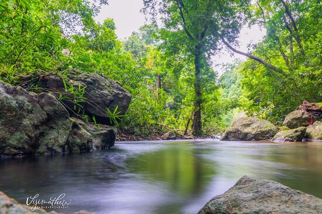
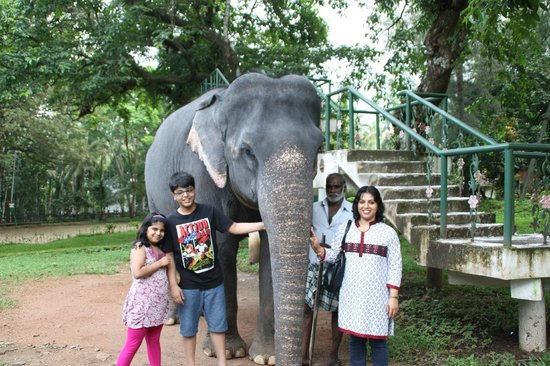

Major Attractions



Pathanamthitta district is known as the 'Headquarters of Pilgrimage Tourism', of the Kerala State. Situated near the Western Ghats and bordered by the hills, Pathanamthitta district is a treat to eyes with its vast unending stretches of forests, rivers and rural landscapes. Blessed by nature, the district is famous for its scenic beauty, fairs and festivals.
It is presumed that the regions that form the district were formerly under the rule of Pandalam, which had connections with the Pandya kingdom.When Pandalam was added to the princely state of Travancore in 1820, the region came under Travancore administration. The district was formed on 1 November 1982 in the interest of speeding up development. The formation was done by incorporating various portions of the erstwhile Kollam, Alappuzha and Idukki districts.
Pathanamthitta district has a reserve forest area of 1,385.27 square kilometres (534.86 sq mi).Three important rivers flow through the district. These rivers originate from various mountains of the Western Ghats mountain range.Pathanamthitta district is known as the "headquarters of pilgrimage tourism.